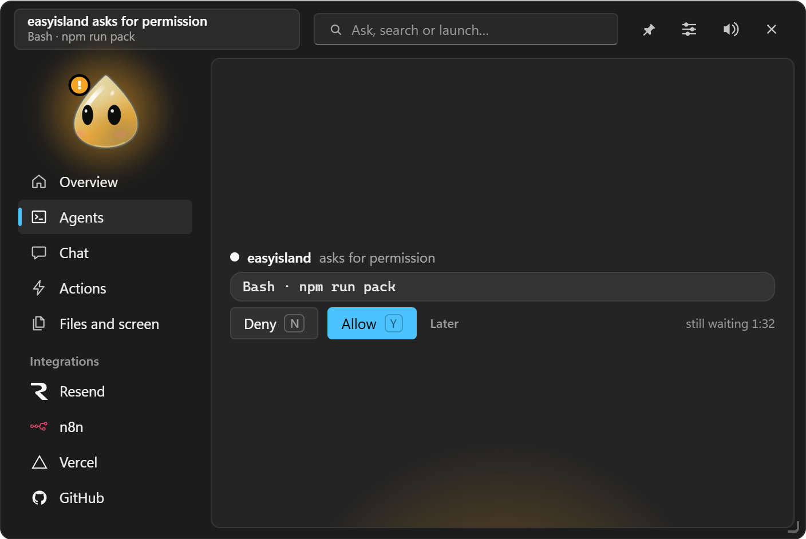
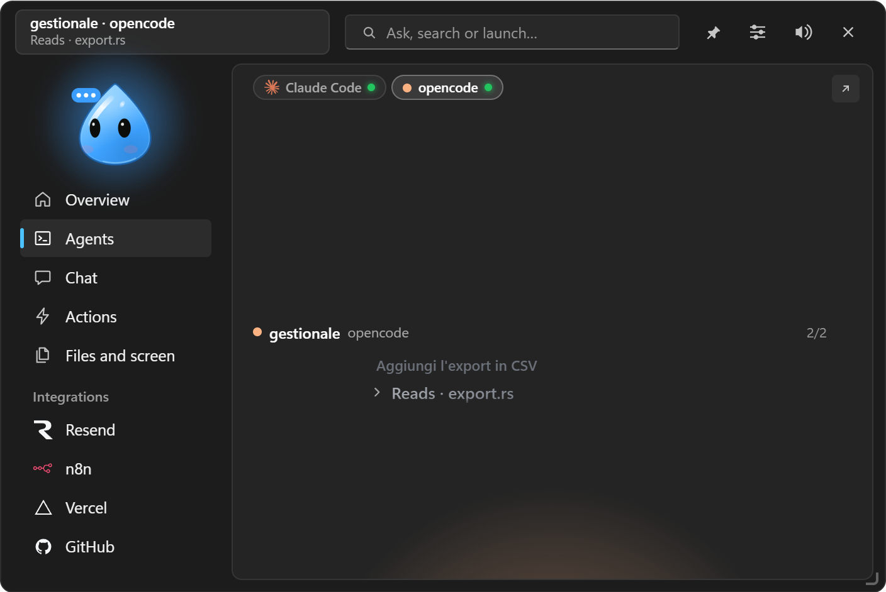
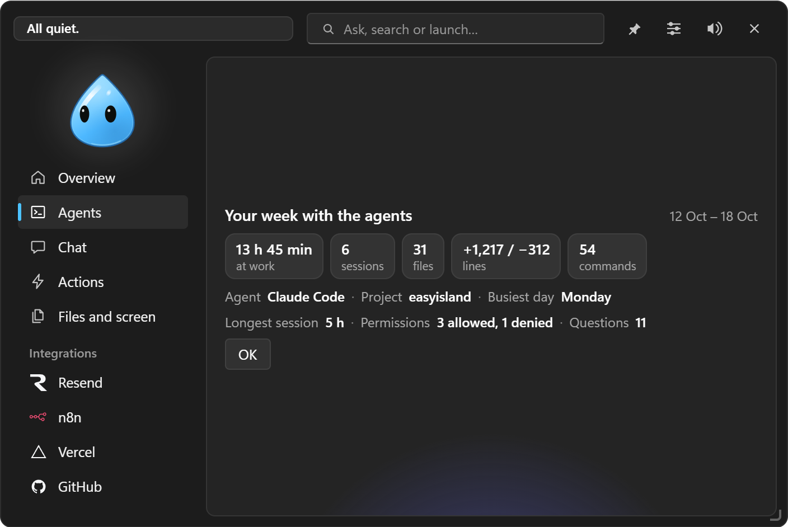

Coding agents
Claude Code, Codex, opencode, Antigravity, Gemini CLI, Cursor and Copilot in the island: sessions, permissions, changes, recaps.

#Connecting an agent
Settings → Coding agents: each agent has its row with Install… and Uninstall…. Before writing you see:
- the exact diff of what will change in the agent's configuration file;
- the path of the dated backup copy that will be created.
Nothing is written until you click. Your own hooks are never touched and uninstalling removes only EasyIsland's entries.
#How it works
The agent calls a small program, easyisland-hook.exe, at every event (start, tool, permission, end). The relay has 300 ms to reach EasyIsland and exits quietly if the app is closed or slow: a session is never blocked or slowed down. If nobody answers a permission in time, the agent asks in the terminal as usual.
#In the Agents tab

- The session's progress and steps, with the tool in use.
- Live changes: every modified file with lines added (green) and removed (red). A click opens the Changes tab: one tab per file, 3 lines of context, ↗ to open the file in VS Code at the right line. The diff stays only in memory (50 changes, one hour at most).
- Permissions with Deny / Allow / Always. "Always" uses the rule proposed by the agent (the card says which) or a session-only rule. Later folds the card away with the time left.
- The agent's questions, with the options as buttons and a free answer.
- "Finished" card with the last message in markdown and Continue: the text reaches the session (in the terminal it starts right away).
- Ask this session: question a read-only copy of the session, without touching the real work.
- Open: brings the session's terminal, VS Code, Cursor or Claude app to the front (Ctrl+Alt+Shift+T).
#The agents
| Agent | What reaches the island |
|---|---|
| Claude Code | Everything: sessions, steps, changes, permissions with "Always", questions, plans, end. Also from the Claude desktop app and the Cursor terminal |
| Codex | Sessions and permissions with Allow / Deny. After installing, open /hooks in Codex and approve EasyIsland's hooks |
| opencode 2 | Turn on Connect opencode: EasyIsland follows its background service without installing anything. Permissions with Allow / Deny / Always, also answerable in opencode |
| opencode 1.x | A plugin written by EasyIsland; restart opencode after installing |
| Antigravity (Google) | Sessions of the agy CLI, the IDE and the app, with steps and diffs; commands and MCP tools with Allow / Deny. If you don't answer, Antigravity decides |
| Gemini CLI | Sessions and steps. Gemini doesn't accept permission answers from outside: the island tells you and takes you back to the terminal |
| Cursor and GitHub Copilot | Observation only (sessions and steps), never permissions |
| Tasks | EasyIsland's own tasks, as sessions of the "Tasks" agent (see Tasks) |
Other tools: any program can show up in Agents by sending events to easyisland-hook <Event> with an easyisland_agent field (see Command line and scripts).
#EasyIsland's tools in Claude Code
Settings → Coding agents → EasyIsland's tools in Claude Code adds EasyIsland's MCP server to Claude Code for every project (after a dated copy of .claude.json). So Claude Code, in any project, can:
- show a card with buttons in the island and wait for your choice (
show_card); - put a file in the Tray (
add_to_tray); - use all of EasyIsland's tools described in Terminal mode and tools.
#Recaps
- Daily recap: in the morning (yesterday's agent time) and at the end of the day (from the hour you choose, 18:00 by default), with repositories that have modified files or commits to push and pull requests waiting for review (with
ghor a GitHub token). - Weekly recap: on Monday from 8:00, hours at work, sessions, files and lines changed, commands, permissions. Also from the notification area menu.
They keep only numbers and the project folder's name, never commands or contents.

#Claude plan limits
With a Pro or Max plan, the Claude usage card shows the percentages of the 5 hours, the week and the Opus week, with a warning from 80 %, and repeats them at the top of the island. It asks Anthropic every 5 minutes with the sign-in already done in Claude Code (the same data as /usage, read only) and also takes them from the sessions' status line. The card also shows tokens used, read from Claude Code's transcripts (numbers only, never the text).
If Claude Code's sign-in expires, EasyIsland renews it by itself by opening Claude Code invisibly for an instant.